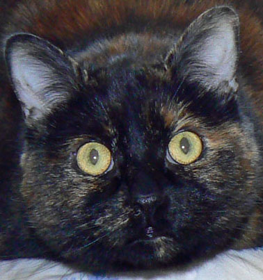

<ion-view hide-nav-bar="true">
  <ion-content class="lizzypic padding" ng-controller="GalleryCtrl">
    <div class="lizzy">
      <h1 class="tagline">It's cool to be a cat</h1>
    </div>

    <div>
      </img>
    </div>
    <div>
      <p><h4>My Early Life</h4>
      <p>I don't remember but I've been told I was found at an animal rescue event sponsored by some volunteers in Auburn, WA. I guess that means I was born in Auburn in February of 2003. Ali and Tim took me to their home. Now it's my home.</p><p>Ali says I've always been playful. Tim says rambunctious but I don't know what that is. Maybe he means when I destroyed all the toilet paper in 4 different bathrooms. Hmmph..I was just a baby. I don't do that any more.</p>
      <h4>I'm a World Traveler</h4>
      <p>I may not look it but I'm a rare breed. I don't know any other cats that have travelled as far as I have. I rode in a jet plane from the United States to the Philippines and back again. That's over 14,000 miles! Grrr...I hate jet planes...cars too..and trucks..in fact...anything with a motor...vacuum cleaners...Hisssssss....</p>
      <h4>My Life in the Philippines</h4>
      <p>I did enjoy living in the Philippines. I don't know why we left. I spent most of my time relaxing in my Bahay Kubo. It was nice and airy and I could look outside through the bamboo strips the walls were made of and watch birds. It was quiet and there were lizards for me to play with too!</p>
      <p>I even had my own seat at the table. Ali would feed me sardines and fried pork. That was awesome! Purrrrrrr.....</p>
      <p>But now we're back in the U.S. Oh well, it's still a pretty good life.</p>
      <p>Except when I have to see the doctor. That's awful!</p>
    </div>
    <a class="item item-list-detail">
      <ion-scroll direction="x">
        
      </ion-scroll>
    </a>
  </ion-content>
</ion-view>
